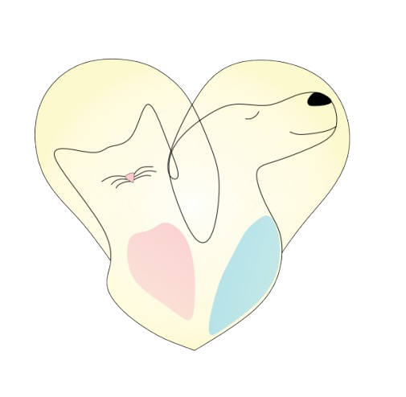
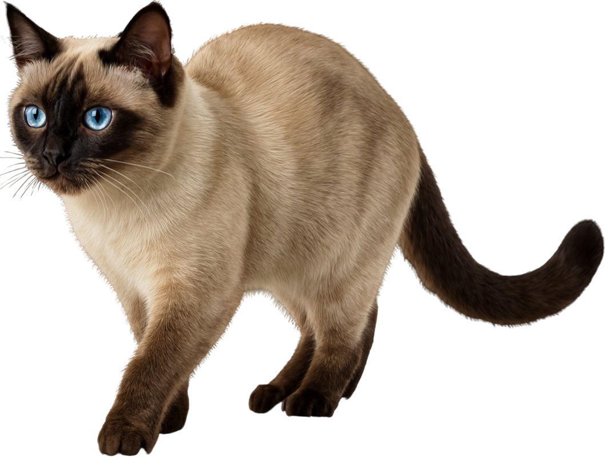
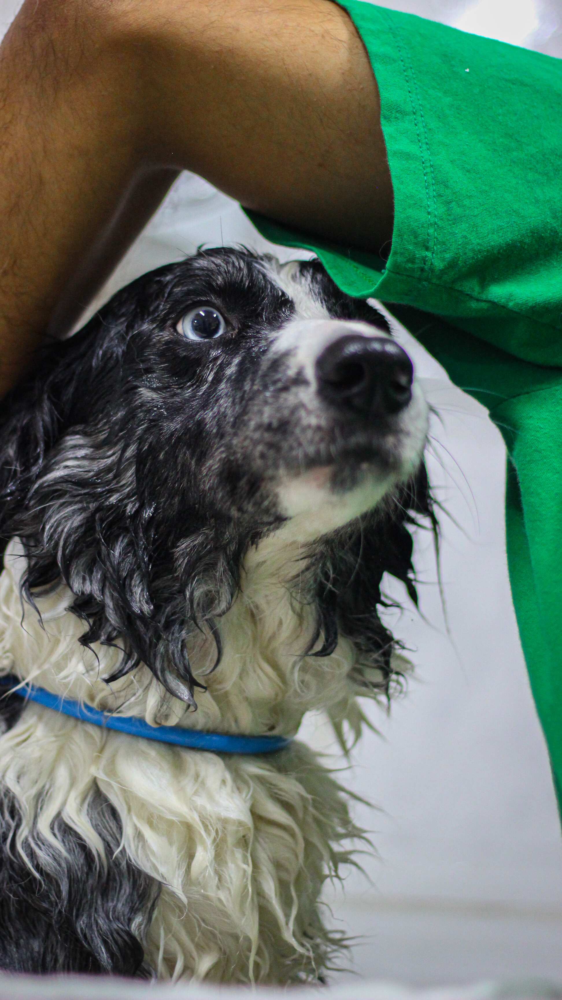
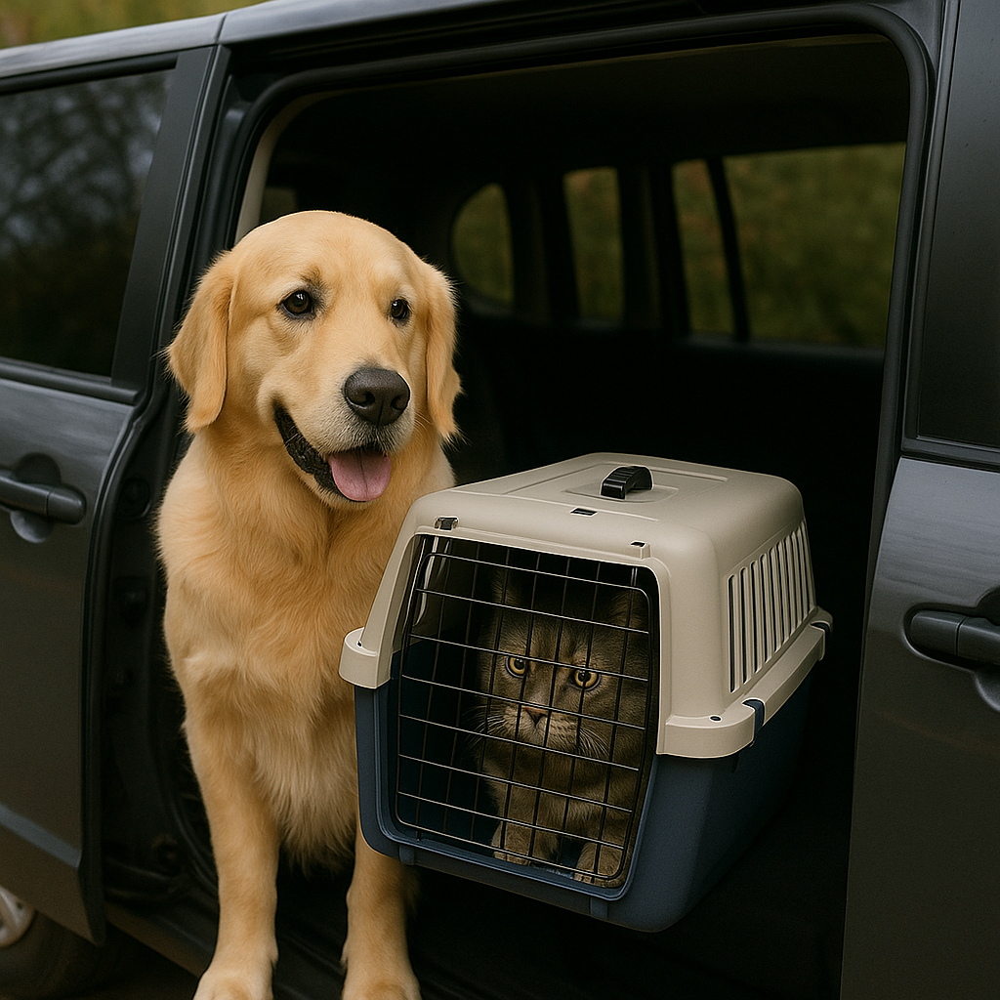
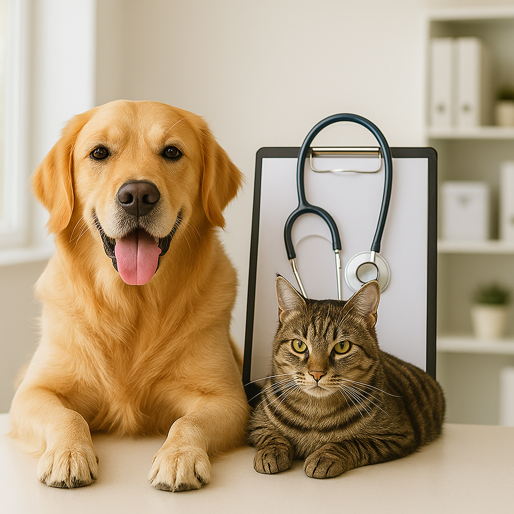
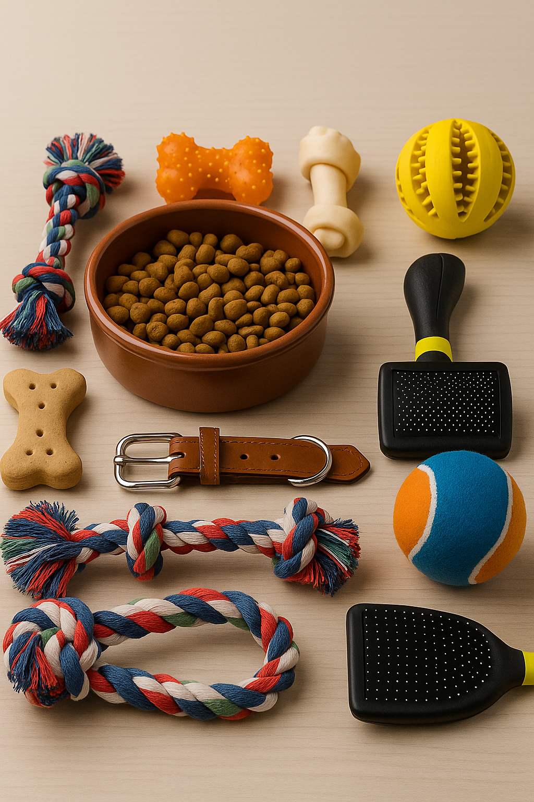

Clínica Veterinária Vet Vidas Brasilândia | Atendimento Veterinário em SP
Cuidado e Saúde para seu Pet na Vila Nova Cachoeirinha
Exames Veterinários e Consultas na VetVidas!

Cirurgias
Realizamos procedimentos cirúrgicos diversos, desde os mais simples até os de alta complexidade. Nossa clínica possui centro cirúrgico equipado e uma equipe especializada para garantir a segurança e o sucesso de cada procedimento. A castração também é realizada por nossa equipe, oferecendo um procedimento seguro e com todos os cuidados necessários para a saúde do seu pet.
Hemograma
O hemograma veterinário é um exame de sangue essencial para avaliar a saúde geral de cachorros e gatos. Detecta anemias, infecções e inflamações, sendo crucial para diagnósticos precisos na nossa clínica na zona norte.
Ecocardiograma
Realizamos ecocardiograma em cães e gatos para avaliar a saúde do coração. Este exame de ultrassom cardíaco permite identificar doenças valvulares, musculares e congênitas, garantindo o cuidado cardiológico do seu pet.
Eletrocardiograma
O eletrocardiograma (ECG) veterinário registra a atividade elétrica do coração, auxiliando no diagnóstico de arritmias e outras condições cardíacas. Indispensável para a saúde cardiovascular de gatos e cachorros.
Radiografia
A radiografia veterinária (Raio-X) é fundamental para diagnosticar fraturas, problemas ósseos, doenças respiratórias e abdominais em cães e gatos. Um exame rápido e eficaz para a saúde do seu animal de estimação em São Paulo.
Ultrassonografia
A ultrassonografia veterinária é um exame de imagem não invasivo que avalia órgãos internos, gestação e detecta alterações abdominais. Oferecemos ultrassom para cães e gatos com precisão e segurança.
Internações
Oferecemos um ambiente seguro e confortável para a internação de animais que necessitam de cuidados contínuos e monitoramento. Nossa equipe veterinária está preparada para tratar diversas condições, garantindo o bem-estar e uma recuperação rápida do seu pet.
Vacinas
A vacinação é a forma mais eficaz de proteger seu pet contra doenças perigosas. Na nossa clínica, oferecemos um cronograma de vacinação completo e personalizado para cães e gatos, seguindo os protocolos mais atuais. Mantenha a saúde do seu pet em dia conosco!
Endoscopia
É um exame fundamental para diagnosticar e remover corpos estranhos, identificar doenças inflamatórias, úlceras e tumores, e coletar material para biópsia de forma segura e precisa em cães e gatos.
Creche & Hotel
Seu cachorro ama brincar e fazer novos amigos? Nossa creche para cachorro é o paraíso da diversão!
Oferecemos um espaço amplo e seguro, onde seu pet pode correr, explorar e socializar à vontade, sempre sob o
olhar atento de nossa equipe. É o local ideal para gastar energia, aprender novas brincadeiras e evitar o
estresse de ficar sozinho em casa. Pense na nossa creche para cães como um clube exclusivo para seu fiel
companheiro!
E para aqueles momentos em que você precisa viajar, nosso hotel pet garante uma experiência de hospedagem
excepcional. Proporcionamos estadias aconchegantes e repletas de carinho, com rotinas que replicam o
conforto do lar. Seja para um fim de semana ou férias prolongadas, o hotel para cães da nossa unidade
assegura que seu bichinho terá todo o cuidado e a atenção que merece, com atividades e socialização diárias.
Deixe seu pet conosco e veja a felicidade dele!
Conheça nosso Pet Shop
Banho e Tosa Profissional na Brasilândia

Proporcione higiene e bem-estar ao seu pet com nosso serviço de Banho e Tosa. Profissionais experientes utilizam produtos de qualidade para deixar seu cão ou gato limpo, cheiroso e feliz. Agende um horário e confira a excelência do cuidado da nossa equipe.
Leva e Traz para Pets na Zona Norte

Pensando na sua comodidade, oferecemos o serviço de Leva e Traz para Banho e Tosa! Buscamos seu pet em bairros como Vila Penteado, Jardim Damasceno, Vila Souza, Jardim Elisa Maria e Jardim Peri, e o entregamos de volta em segurança. Mais tempo para você, mais cuidado para ele.
Convênio Vet Vidas

Pensando no bem-estar e na saúde contínua do seu pet, a Clínica Vet Vidas oferece seu próprio plano de convênio. Essa é uma forma planejada e acessível de cuidar da saúde do seu animal de estimação, garantindo o acesso a consultas, exames e procedimentos com mais comodidade e segurança. Para mais informações sobre como aderir ao nosso convênio, entre em contato.
Acessórios Pet

Seu pet merece o melhor! Descubra nossos acessórios pet de alta qualidade. Para cães, temos coleiras, guias, peitorais, e brinquedos para cachorro como mordedores. Para gatos, encontre arranhadores de todos os tipos, varinhas e bolinhas, além de confortáveis caminhas para gatos. Oferecemos também comedouros (incluindo comedouro lento), bebedouros automáticos, e caixas de transporte seguras para cães e gatos. Tudo para o bem-estar e a alegria do seu companheiro.
Sobre nós
A Clínica Veterinária popular VetVidas, localizada na Zona Norte de São Paulo (Av. Dep. Cantídio Sampaio, 559), é o seu parceiro ideal na saúde e bem-estar do seu pet. Oferecemos atendimento veterinário completo, com equipe qualificada e infraestrutura moderna para cães, gatos e outros animais de estimação. Priorizamos o cuidado humanizado e acessível, desde consultas de rotina, vacinação e exames, até procedimentos mais complexos e cirurgias. Conte com nossos serviços de emergência, banho e tosa, e um pet shop com tudo que seu melhor amigo precisa. Venha nos visitar na Vila Nova Cachoeirinha e descubra por que somos a escolha certa para a saúde do seu pet em São Paulo!